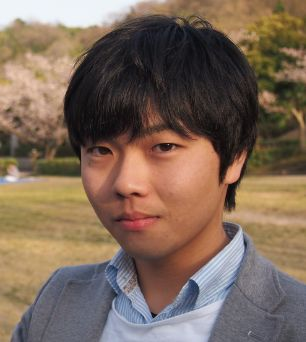

角田 一樹

| 研究テーマ | 新奇スピン機能性材料の電子状態の研究 1) 時間分解光電子分光を用いたディラック電子系の非平衡キャリアダイナミクスの研究 2) レーザー励起スピン分解光電子分光装置の開発と機能性材料のスピン偏極電子状態の研究 3) 硬X線光電子分光および軟X線磁気円二色性分光を用いた強磁性形状記憶効果の解明 |
|---|---|
| 出身 | 鳥取 |
| 卒業論文題目 | ホイスラー型強磁性形状記憶合金Ni-Fe-Ga-Coのマルテンサイト機構の研究 |
| 修士論文題目 | トポロジカル絶縁体および強磁性形状記憶合金のスピン偏極電子状態と非平衡キャリアダイナミクス |
| 博士論文題目 | Spin-Dependent Electronic Structures and Ultrafast Carrier Dynamics of Novel Functional Materials |
| 原著論文 | 4. K. Sumida, Y. Ishida, T. Yoshikawa, J. Chen, M. Nurmamat, K. A. Kokh, O. E. Tereshchenko, S. Shin, and A. Kimura “Inverted Dirac-electron population for broadband lasing in a thermally activated p-type topological insulator” Physical Review B 99, 085302 (2019). 3. K. Sumida, T. Natsumeda, K. Miyamoto, I. V. Silkin, K. Kuroda, K. Shirai, S. Zhu, K. Taguchi, M. Arita, J. Fujii, A. Varykhalov, O. Rader, V. A. Golyashov, K. A. Kokh, O. E. Tereshchenko, E. V. Chulkov, T. Okuda, and A. Kimura “Enhanced surface state protection and band gap of in the topological insulator PbBi4Te4S3” Physical Review Materials 2, 104201 (2018). 2. K. Sumida, Y. Ishida, S. Zhu, M. Ye, A. Pertsova, C. Triola, K. A. Kokh, O. E. Tereshchenko, A. V. Balatsky, S. Shin, and A. Kimura "Prolonged duration of nonequilibrated Dirac fermions in neutral topological insulators" Scientific Reports 7, 14080 (2017). 1. K. Sumida, K. Shirai, S. Zhu, M. Taniguchi, M. Ye, S. Ueda, Y. Takeda, Y. Saitoh, I. R. Aseguinolaza, J. M. Barandiaran, V. A. Chernenko, and A. Kimura "Spectroscopic evidence of band Jahn-Teller distortion upon martensitic phase transition in Heusler-type Ni-Fe(Co)-Ga ferromagnetic shape-memory alloy films" Physical Review B 91, 134417 (2015). |
| 国際学会 | 22. 学会名：The 23rd Hiroshima International Symposium on Synchrotron Radiation 題目：Enhanced Surface State Protection and Band Gap in the Topological Insulator PbBi4Te4S3 場所：Hiroshima Univ., Japan (2019.3) ポスター発表 21. 学会名：New Trends in Topological Insulators 2018 (NTTI2018) and 18th International Conference on Narrow Gap Systems (NGS18) 題目：Ultrafast carrier dynamics and transient population inversion of the topological insulators (Sb,Bi)2Te3 場所：Univ. of Luxembourg, Luxembourg (2018.7) 口頭発表 20. 学会名：The 22nd Hiroshima International Symposium on Synchrotron Radiation 題目：Present Status of 6 eV Laser Based Spin-ARPES System 場所：Hiroshima Univ., Japan (2018.3) ポスター発表 19. 学会名：The 1st International Workshop on Emergent Condensed Matter Physics (ECMP2018) 題目：Population inversion in topological insulators (Sb,Bi)2Te3 場所：Hiroshima Univ., Japan (2018.3) ポスター発表 18. 学会名：International workshop "Variety and universality of bulk-edge correspondence in topological phases : From solid state physics to transdisciplinary concepts" (BEC2018) 題目：Inverted Dirac -population in a thermally activated topological insulator 場所：Univ. of Tsukuba, Japan (2018.1) ポスター発表 17. 学会名：Junjiro Kanamori Memorial International Symposium -New Horizon of Magnetism- 題目：Unveiling reentrant martensitic phase transition mechanism in Co2Cr(Ga,Si) Heusler alloys 場所：The Univ. of Tokyo, Japan (2017.9) ポスター発表 16. 学会名：New Trends in Topological Insulators 2017 (NTTI2017) 題目：Ultrafast surface carrier dynamics of magnetically doped topological insulators 場所：Monte Verita, Switzerland (2017.7) ポスター発表 15. 学会名：The 17th International workshop on strong correlations and angle-resolved photoemission spectroscopy (CORPES17) 題目：Ultrafast surface Dirac fermion dynamics of magnetic topological insulator (Sb1-xVx)2Te3 場所：JMS Aster Plaza, Japan (2017.7) 口頭発表 14. 学会名：10th International Symposium on Ultrafast Surface Dynamics (USD10) 題目：Temperature-induced prolonged duration of non-equilibrium surface Dirac fermions in topological insulators 場所：Inzell, Germany (2017.6) 口頭発表 13. 学会名：Superstripes 2017 題目：Ultrafast Surface Dirac Fermion Dynamics of Sb2Te3-based Topological Insulators 場所：Ischia, Italy (2017.6) 口頭発表（招待講演） 12. 学会名：Symposium on Surface Science & Nanotechnology -25th Anniversary of SSSJ Kansai- (SSSN-Kansai) 題目：Surface Dirac Fermion Dynamics of Non-Magnetic and Magnetic Topological Insulators 場所：Kyoto, Japan (2017.1) ポスター発表 11. 学会名：Physics of bulk-edge correspondence & its universality From solid state physics to cold atoms International workshop (BEC2016) 題目：Long duration of non-equilibrium Dirac fermions in topological insulator (Sb,Bi)2Te3 場所：Kyoto Univ., Japan (2016.9) 口頭発表 10. 学会名：39th International Conference on Vacuum Ultraviolet and X-ray Physics (VUVX2016) 題目：Dirac fermion dynamics in carrier tuned topological insulators 場所：Zurich, Switzerland (2016.7) ポスター発表 9. 学会名：EMN Prague meeting 題目：Dirac fermion dynamics in the topological insulators (Sb1-xBix)2Te3 場所：Prague, Czech Republic (2016.6) 口頭発表（招待講演） 8. 学会名：15th International Conference on the Formation of Semiconductor Interfaces (ICFSI-15) 題目：Long duration of non-equilibrium Dirac fermions in topological insulator (Sb,Bi)2Te3 場所：International Conference Center Hiroshima, Japan (2015.11) ポスター発表 7. 学会名：Physics of bulk-edge correspondence & its universality From solid state physics to cold atoms International workshop (BEC2015) 題目：Long duration of non-equilibrium Dirac fermions in topological insulator (Sb,Bi)2Te3 場所：Univ. of Tsukuba, Japan (2015.9) 口頭発表 6. 学会名：EMN Spain meeting 2015 題目：Spectroscopic evidence of band Jahn-Teller distortion upon martensitic phase transition in Heusler-type ferromagnetic shape-memory alloys 場所：San Sebastian, Spain (2015.9) 口頭発表（招待講演） 5. 学会名：20th International Conference on Magnetism (ICM2015) 題目：A population inversion observed in surface Dirac cone of topological insulator Sb2Te3 場所：Barcelona, Spain (2015.7) 口頭発表 4. 学会名：20th International Conference on Magnetism (ICM2015) 題目：Origin of Martensitic Phase Transition in Ferromagnetic Shape Memory Alloy Ni-Fe(Co)-Ga Thin Film 場所：Barcelona, Spain (2015.7) ポスター発表 3. 学会名：9th International Symposium on Ultrafast Surface Dynamics (USD9) 題目：Dirac fermion dynamics near the Dirac node of the topological insulator Sb2Te3 probed by TrARPES 場所：Laforet Biwako, Japan (2015.5) 口頭発表 2. 学会名：The 19th Hiroshima International Symposium on Synchrotron Radiation 題目：Ultrafast electron dynamics of topological insulator Sb2Te3 with different carrier concentrations 場所：Hiroshima Univ., Japan (2015.3) ポスター発表 1. 学会名：2014 Japan-Korea Student Workshop 題目：Study of Martensitic Phase Transition Mechanism in Ferromagnetic Shape Memory Alloy Ni-Fe-Ga-Co Film 場所：Hiroshima Univ., Japan (2014.7) 口頭発表 |
| 国内学会 | 22. 学会名：第25回みちのく磁性談話会 題目：光電子分光で捉えるCo基磁性形状記憶合金の電子状態 場所：秋保リゾートホテルクレセント（2018.5) 口頭発表（招待講演） 21. 学会名：量子物理学・ナノサイエンス第224回セミナー 題目：トポロジカル絶縁体のスピン偏極電子状態と超高速キャリアダイナミクス 場所：東京工業大学（2018.4） 口頭発表（招待講演） 20. 学会名：日本物理学会 2018年・春季大会 題目：トポロジカル絶縁体(Sb,Bi)2Te3における反転分布現象の観測と制御 場所：東京理科大学 (2018.3) ポスター発表 19. 学会名：日本物理学会 2017年・秋季大会 題目：ホイスラー合金Co2Cr(Ga,Si)におけるリエントラント・マルテンサイト変態機構 場所：岩手大学 (2017.9) ポスター発表 18. 学会名：日本物理学会 2017年・秋季大会 題目：磁性トポロジカル絶縁体(Sb1-xVx)2Te3のキャリア誘起強磁性および超高速キャリアダイナミクス 場所：岩手大学 (2017.9) 口頭発表 17. 学会名：日本金属学会 2017年秋期講演大会 題目：放射光分光および第一原理計算を用いたホイスラー合金Co2Cr(Ga,Si)の電子状態の研究 場所：北海道大学 (2017.9) 口頭発表 16. 学会名：スタートアップ研究会 科研費基盤S 「トポロジカル相でのバルク・エッジ対応の多様性と普遍性：固体物理を越えて分野横断へ」 題目：鉛系トポロジカル絶縁体PbBi4Te4S3のスピン角度分解光電子分光 場所：筑波大学 (2017.6) ポスター発表 15. 学会名：科研費基盤研究会A (26247064) 第6回研究会 -トポロジカル相におけるバルク・エッジ対応の物理とその普遍性：固体物理から冷却原子まで- 題目：磁性トポロジカル絶縁体の超高速キャリアダイナミクス 場所：筑波大学 (2017.3) ポスター発表 14. 学会名：日本物理学会 2017年・年次大会 題目：磁性トポロジカル絶縁体の超高速キャリアダイナミクス 場所：大阪大学 (2017.3) ポスター発表 13. 学会名：第30回日本放射光学会年会・放射光科学合同シンポジウム 題目：硬X線光電子分光によるホイスラー合金Co2Cr(Ga,Si)の電子状態の研究 場所：神戸芸術センター (2017.1) 口頭発表 12. 学会名：日本物理学会 2016年・秋季大会 題目：トポロジカル絶縁体(Sb,Bi)2Te3の非平衡キャリアダイナミクスの温度依存性 場所：金沢大学 (2016.9) 口頭発表 11. 学会名：第63回応用物理学会春季学術講演会 題目：キャリアチューニングによるトポロジカル絶縁体(Sb1-xBix)2Te3の非平衡持続時間の制御 場所：東京工業大学 (2016.3) 口頭発表 10. 学会名：東北大学電気通信研究所共同プロジェクト研究会 -機能性磁性材料の電子構造と物性発現機構の解明- 題目：リエントラントマルテンサイト変態を示すCo2Cr(Ga,Si)合金の電子状態 場所：東北大学 (2016.2) 口頭発表 9. 学会名：第29回日本放射光学会年会・放射光科学合同シンポジウム 題目：トポロジカル絶縁体PbBi4Te4S3のスピン偏極電子状態 場所：柏の葉カンファレンスセンター (2016.1) 口頭発表 8. 学会名：表面・界面スペクトロスコピー2015 題目：Dirac Fermion dynamics in the topological insulator (Sb1-xBix)2Te3 probed by time-resolved photoemission spectroscopy 場所：国立女性教育会館 (2015.11) ポスター発表 7. 学会名：日本物理学会 2015年・秋季大会 題目：トポロジカル絶縁体(Sb1-xBix)2Te3の時間分解光電子分光 場所：関西大学 (2015.9) 口頭発表 6. 学会名：日本物理学会 2015年・年次大会 題目：トポロジカル絶縁体Sb2Te3の時間分解光電子分光 場所：早稲田大学 (2015.3) 口頭発表 5. 学会名：科研費基盤研究会A (26247064) 第2回研究会 -トポロジカル相におけるバルク・エッジ対応の物理とその普遍性：固体物理から冷却原子まで- 題目：トポロジカル絶縁体Sb2Te3の時間分解光電子分光 場所：筑波大学 (2015.2) ポスター発表 4. 学会名：第28回日本放射光学会年会・放射光科学合同シンポジウム 題目：放射光分光による強磁性形状記憶合金Ni-Fe-Ga-Co薄膜のマルテンサイト機構の解明 場所：立命館大学 (2015.1) 口頭発表 3. 学会名：日本物理学会 2014年・秋季大会 題目：強磁性形状記憶合金Ni-Fe-Ga-Coのマルテンサイト機構の研究 場所：中部大学 (2014.9) 口頭発表 2. 学会名：日本物理学会 2014年・年次大会 題目：ホイスラー合金Ni-Fe-Ga-Coの硬X線光電子分光を用いたマルテンサイト機構の解明 場所：東海大学 (2014.3) 口頭発表 1. 学会名：東北大学電気通信研究所共同プロジェクト研究会 -強磁性形状記憶合金をはじめとする機能性磁性材料の電子構造と物性発現機構の解明- 題目：ホイスラー型強磁性形状記憶合金Ni-Fe-Ga-Coのマルテンサイト機構の研究 場所：東北大学 (2014.2) 口頭発表 |
| 受賞歴 | 13. 賞名：領域9学生ポスター優秀賞 日本物理学会 2018年・春季大会 受賞年月：2018.3 12. 賞名：Best Student Poster Award The 1st International Workshop on Emergent Condensed Matter Physics 受賞年月：2018.3 11. 賞名：平成29年度成績優秀学生 広島大学エクセレントスチューデントスカラシップ 受賞年月：2017.12 10. 賞名：領域5学生ポスター優秀賞 日本物理学会 2017年・秋季大会 受賞年月：2017.9 9. 賞名：Young Researcher Award Symposium on Surface Science & Nanotechnology -25th Anniversary of SSSJ Kansai- 受賞年月：2017.1 8. 賞名：理学研究科長賞 受賞年月：2016.3 7. 賞名：平成27年度成績優秀学生 広島大学エクセレントスチューデントスカラシップ 受賞年月：2015.12 6. 賞名：Student Prize 表面・界面スペクトロスコピー2015 受賞年月：2015.11 5. 賞名：Best Student Poster Award 15th International Conference on the Formation of Semiconductor Interfaces 受賞年月：2015.11 4. 賞名：Best Student Poster Award The 19th Hiroshima International Symposium on Synchrotron Radiation 受賞年月：2015.3 3. 賞名：理学部長表彰 受賞年月：2014.3 2. 賞名：成績優秀者表彰 受賞年月：2014.3 1. 賞名：卒業論文発表優秀賞 受賞年月：2014.3 |